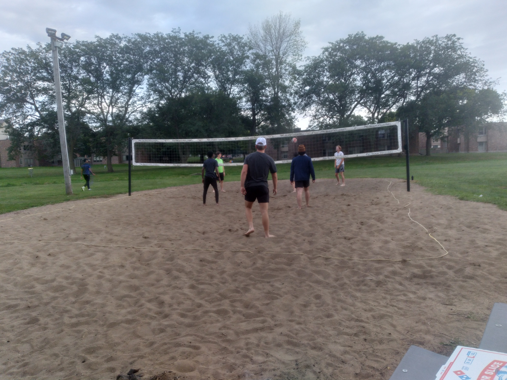
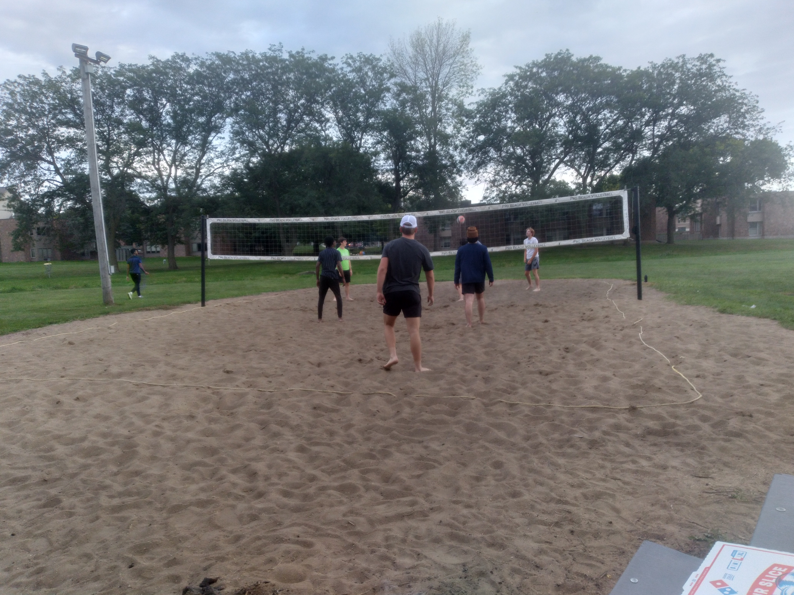
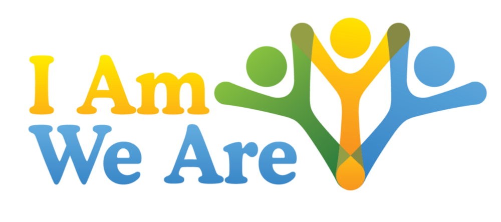

Getting to know your floor-mates program
Jack and his partner Tai playing a very entertaining pingpong game. The main goal of this floor program is to create bond between floor-mates. Students were asked to choose ticket that has name of a person that is not their roomie to be their buddy for the rest of the weeks until the next floor program. This program also supports the concept of Ubuntu, caring for the people around us. "Iam because we are".
Freshmen Volleball match
 

It was wonderful getting the freshmen students together to play volleyball. This was my second floor program and it is definitely one of my favorites. We had a lot of fun. It was great welcoming the new students on campus through and volleyball match and passing unto them spirit of unity and togetherness
Future programs
Continuation of Ubuntu
My future program will focus on promoting the goals of Ubuntu. I have already started similar idea this semester.
Academic Excellence
Academic excellence is going to be one of my major goals for the next semester. I am going to host study sessions for students to study together during their exams and provide snacks. This also tie into Ubuntu and community building
I am the Resident assistant for vollmer first floor. It has been a journey fill with highs and lows. I am grateful to be part of the experience of the freshmen students that lives on my floor. I have learned a lot from being a resident assistant.